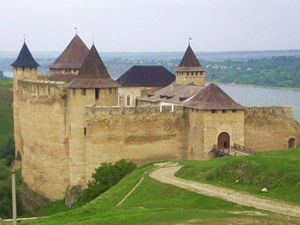

|
 |
|
Ратуша в стилі рококо, якій більше б підійшло обрамлення з вуличних пейзажів якої-небудь європейської столиці, ніж невеликого містечка, загубленого серед незліченних горбів і безкраїх степів Тернопільщини. Ще один безцінний дар роду Потоцьких Історії, яка виносить свою оцінку по справах, а не по упередженим особистісним оцінками сучасників, підносячи на п‘єдестал одних і скидаючи з нього інших... читати статтю
 Хотинська фортеця
На березі скелястого мису Дністра серед пагорбів Буковини височить Хотинська фортеця, біля стін якої не раз вирішувалися долі цілих держав. З нею пов‘язані імена багатьох видатних діячів України, Росії, Молдови, Польщі, Туреччини… Недарма назва фортеці – Хотин – від слова “хотіти”... читати статтю
 Замок «Паланок»
Замок «Паланок»
На західній околиці Мукачева, на вершині згаслого вулкана гордовито височить оспівана легендами і бойовою славою середньовічна фортеця – замок «Паланок»... читати статтю